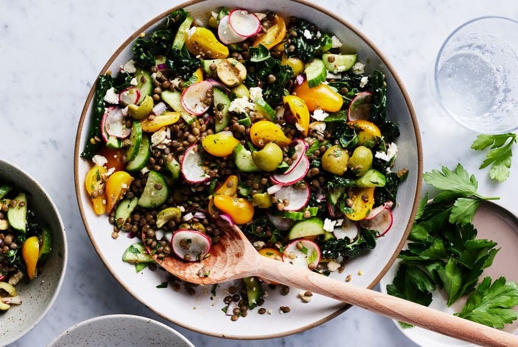

Lentil Salad

Description
This lentil salad recipe is a perfect make-ahead lunch or healthy side dish! It's filled with fresh veggies, feta, olives, and a zingy lemon dressing. It keeps well for up to 4 days in the fridge.
Ingredients
- Lentils, of course! I like to use French lentils for this salad. They hold their shape nicely when cooked, and they don’t get mushy like brown or red lentils do.
- Grape tomatoes – I love their sweet flavor and juicy texture in this salad. Any type of cherry or grape tomatoes will work here, but I think yellow ones are especially pretty.
- Cucumbers and radishes – For crunch.
- Red onion – For sharp, savory flavor.
- Lacinato kale – I always like to sneak greens into lunch salads when I can. I use kale here because it holds up well under the dressing even when I make this salad in advance.
- Green olives – They add delicious briny flavor. Not a green olive person? Feel free to use kalamata olives instead.
- Feta cheese – For saltiness and tang.
- The dressing – It’s a zingy combo of olive oil, fresh lemon juice, garlic, Dijon mustard, salt, and pepper. To add complexity to the salad, I also mix in ground cumin and either Italian seasoning or za’atar. Use whichever you keep in your pantry.
- fresh mint and parsley – For cooling, aromatic flavor.
Steps
- Make the dressing: In a large bowl, whisk together the olive oil, lemon juice, garlic, mustard, Italian seasoning, salt, cumin, and several grinds of pepper.
- Assemble the salad: Add the lentils, cucumbers, tomatoes, red onion, kale, radishes, feta, and olives to the bowl with the dressing and toss to coat. Add the parsley and mint and toss again. Season to taste and serve.